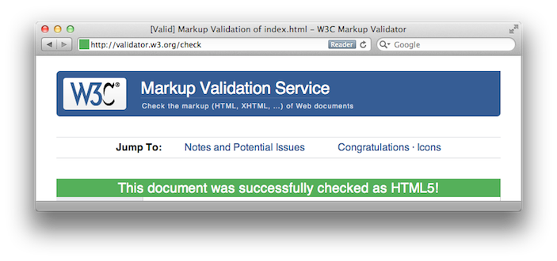

Doctype
Up until this point, I’ve told you that all HTML documents start the same: an <html> tag, and then the <head> section. I hope this doesn’t make you hate me, but I’ve been telling you the wrong thing. There’s another tag that is supposed to come before the <html> tag in every web page you write: the <doctype> tag. There are a variety of Document Types, and they all depend on the version of HTML that you use. That’s right, there are multiple kinds of HTML. Dialects, if you will. You may see websites using plain HTML version 4.0, or a more modern XHTML (and within XHTML, either Strict or Transitional), or perhaps the new HTML5 that is frequently discussed these days.
You may be wondering what the big deal is, and that’s okay. Keeping strict rules on HTML (and XHTML) allows the software companies that make web browsers to keep the browsing experiences consistent. Imagine if all the programs on your computer didn’t have to adhere to a set of rules for their respective programming languages—you’d have a tough time getting anything done. All these flavors of HTML have very similar code by appearance, the same code we’ve been using so far. They’re separated by rules on which tags are acceptable and other syntax guidelines.
I’ve actually been teaching in the style of HTML5 throughout these lessons, so rest assured that your knowledge is future-proof for now. What makes all of this HTML5? For one, you have to always close your tags, as seen by the slash in single-tag elements like <img> and <br>. Older versions of HTML do not require this. There are other finer points too, and you can read about them if you’re very bored.
There are some special tags only available in HTML5, like <video> and <audio>, to compliment <img> in this post-YouTube world we live in. There are also new tags for building the foundation of your page, like <header>, <nav>, <article>, and <footer>. Instead of using a format like <div id="header"> </div> like in the previous lesson, you can use the much simpler <header> </header> in HTML5. I’m sorry for holding out on this until now.
Anyway, back to this <doctype> tag. You put this before the <html> tag to alert the browser as to which version of HTML you’ve written in. For HTML5, it’s pretty simple. This is all you need:
<!doctype html>
This tag breaks all the rules we’ve talked about, like not having a closing slash and having an exclamation point at the beginning but not being a full comment. I can’t explain why it’s this way. Just make sure you copy and paste it as it’s written here when you use it.
Meta Tags
There’s a bunch of other behind-the-scenes stuff that you can put in your <head> section. So far, we have the page’s <title> and a <link> to our stylesheet. There are also <meta> tags, which hold information about your website such as who wrote it, what it’s about, and what language encoding it’s in. These tags are never shown to your viewers, but other computers (like search engines! Hello, Google) read them and use them to help determine the site’s material. Again, these <meta> tags reside within the <head> section of your web page, and look something like this:
<meta name="description" content="This website is about puppies" />
Note that <meta> tags are self-closing and need the trailing slash at the end. A <meta> tag for keywords could look like:
<meta name="keywords" content="puppies, doggies, kibble" />
Particularly of note, there’s a <meta> tag required by HTML5 which tells browsers how the page has been encoded. Web page data is compressed, turned into zeroes and ones as it zooms through the Internet tubes, and it helps the browser understand it quicker if it knows how to read it. I’ll give you the standard <meta> tag I always use for my websites, and feel free to copy and paste it directly into yours:
<meta charset="utf-8" />
I realize that was a lot to take in all at once. So here’s a complete beginning to an HTML5 page that uses an external CSS stylesheet, as a guideline for you to use in the future.
<!doctype html>
<html>
<head>
<title>Puppy Power</title>
<meta charset="utf-8" />
<meta name="description" content="This website is about puppies" />
<meta name="keywords" content="puppies, doggies, kibble" />
<link rel="stylesheet" href="dogstyles.css" type="text/css" />
</head>
<body>
</body>
</html>
Validation
If you’ve been using a modern browser like Firefox, Chrome, or Safari, you may not notice any difference between the way your homework HTML pages looked before and the way they’ll look after you add all these fancy behind-the-scenes tags. Why bother then, right? While it’s true that modern browsers can do a lot of auto-detection that theoretically eliminates the need for these <DOCTYPE> and <meta>tags, there’s still a chance that your distant relative is dialing onto the interwebs with a modem on their 1998 PC. Using these extra tags may not help them much, but it will give their browser a fighting chance.
An organization called the World Wide Web Consortium is the reason we have all these rules for different HTML dialects. They provide a little tool that lets you see whether your code is free of errors and should therefore work well across most browsers. This tool is the W3C Validator.
You can upload an HTML file directly from your computer, or point it to a web page already on the Internet. If all goes well, you’ll see the following green message. Fun fact: this tool can validate your CSS too!
You may have noticed that I said that validation guarantees that your web page will function in most browsers. The notable exception is Internet Explorer, especially when it comes to CSS. There are many web developers cursing IE’s deficiencies all over the Internet, and a comparable number of “hacks” have been created to make otherwise-valid designs compatible. Some of these are included in the links section at the bottom.
Go Teach Yourself
The dynamic nature of the Internet means millions of websites are changing daily. Every so often, the rules of making websites will change as well. While I’ve attempted to teach you the basics of coding web pages from scratch, it’s possible that some part of this guide will be outdated when you read it. With that in mind, I must mention it’s just as important to know how to teach yourself additional HTML and CSS as it has been to get started.
For example, there are CSS properties that allow designers to get very precise with the layout of their pages like position and z-index. Then, there are advanced CSS techniques like -animation and -transform that can move content around the page in real-time. However, I haven’t gotten into these in this series because I’m still figuring them out myself. This doesn’t mean you have to wait for me, though! Search for “HTML tutorial” or “CSS tutorial” and pick from one of the many results. It will most likely be more comprehensive than this one. The same goes for other web languages, such as PHP or Ruby on Rails, if you’re looking to get into advanced web programming.
If you’re ever stuck, don’t be afraid to look at the source code of a website you like and copy their code to figure out how they did something interesting. Be sure to practice your own code often as well. I now pass the torch to you — go out there and make something cool!
Useful Links
- HTML Tutorial at W3Schools — a great resource for learning about every HTML tag and how they’re used together
- CSS Tutorial at W3Schools — another great resource from the same people, but for CSS
- W3C Validator — see if your HTML and CSS adhere to the official rules
- Recommended Doctype Declarations — a list of all possible
DOCTYPEs from the W3C, so you can see the other flavors of HTML - CSS Hacks — a list of hacks to make rules-compliant CSS work in finicky browsers like Internet Explorer
- Avoiding CSS Hacks for Internet Explorer — a worthwhile counterpoint to the above
- Replacing Subtle Animations with CSS3 — just one example of advanced CSS in use to create animations
- Taking Control of the Cascade — a great overview on how cascading works
- The CSS Zen Garden — an awesome example of how the same HTML file can be presented a million different ways, just by using different stylesheets
- A List Apart — intelligent and thoughtful essays about the world of web design